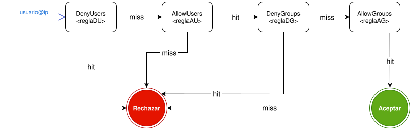

U06 Linux SSH
ÍNDICE
SERVIDOR SSH
INSTALACIÓN
Dependiendo de la distribución GNU/Linux que se utilice, el proceso de instalación del servidor puede variar.
Para los sistemas Debian y derivados (Ubuntu, Linux Mint, etc.) se utiliza el sistema de gestión de paquetes apt, mientras que en Alpine Linux se emplea apk.
En Debian, el paquete que proporciona el servidor SSH se llama openssh-server y el que proporciona el cliente se llama openssh-client. El paquete openssh-server depende del paquete openssh-client y, por lo tanto, al instalar el servidor se instalará automáticamente el cliente. Existe un metapaquete llamado ssh que instala ambos paquetes. En este caso instalar ssh u openssh-server es equivalente, ya que ambos instalarán el servidor y el cliente.
En Alpine Linux, el paquete que proporciona el servidor SSH se llama openssh-server y el que proporciona el cliente se llama openssh-client. También tenemos el metapaquete que instala ambos y que se llama openssh.
Distribución Debian
apt update
apt install openssh-server
Distribución Alpine
apk update
apk add openssh-server
En Debian, tras la instalación se crea y activa el servicio ssh (o sshd) gestionado por systemd, y se generan las claves de host en /etc/ssh/. Sin embargo, en Alpine Linux el proceso es diferente: tras instalar el paquete openssh-server no se genera automáticamente el servicio ni las claves de host. Por lo tanto, en Alpine Linux es necesario generar manualmente las claves de host con el comando ssh-keygen y luego iniciar el servicio sshd utilizando rc-service. Para hacer que el servicio sshd se inicie automáticamente al arrancar el sistema en Alpine Linux, se debe habilitar con rc-update.
Instalación SSH
En Debian, el proceso de instalación del servidor SSH se realiza con el siguiente comando:
apt install openssh-server
En Alpine Linux, el proceso de instalación es el siguiente:
apk add openssh-server
ssh-keygen -A
rc-service sshd start
rc-update add sshd default
La última línea asegura que el servicio sshd se inicie automáticamente al arrancar el sistema.
PROGRAMAS RELACIONADOS
Cuando instalamos el servidor OpenSSH en un sistema Debian (o derivados) no solo se pone en marcha el servicio, sino que se añaden varias utilidades que cubren las tareas habituales relacionadas con SSH: ofrecer el servicio, conectarse a otros equipos, transferir ficheros y gestionar las claves de autenticación.
-
sshd (servidor SSH). Es el servicio o demonio que queda en segundo plano escuchando normalmente en el puerto 22 a la espera de conexiones entrantes. Se administra como cualquier otro servicio del sistema (por ejemplo, con
systemctl start ssh,systemctl stop ssh, etc.) y se configura principalmente a través del fichero/etc/ssh/sshd_config. -
ssh (cliente SSH). Es el programa que se utiliza para conectarse de forma remota a otro equipo. Permite tanto abrir una sesión interactiva (tipo consola) como ejecutar un único comando en la máquina remota, recibiendo la salida en nuestra terminal local.
-
scp (copia de archivos sobre SSH). Proporciona una forma sencilla de copiar archivos y directorios entre el equipo local y el remoto utilizando SSH como canal cifrado. La sintaxis es similar a la de
cp, pero indicando el equipo remoto con la formausuario@host:ruta. -
sftp (SFTP: "FTP sobre SSH"). Ofrece un cliente interactivo de transferencia de archivos, similar a un cliente FTP tradicional, pero utilizando SSH como transporte seguro. Desde este entorno se pueden listar directorios, subir y descargar archivos, borrar, renombrar, etc., con comandos como
ls,cd,getoput. -
ssh-keygen (creación y gestión de claves). Se emplea para crear y administrar pares de claves pública/privada que permiten la autenticación sin contraseña. También genera las claves de host que identifican al propio servidor (las que se almacenan en
/etc/ssh/ssh_host_*). Permite elegir el tipo de clave (rsa,ed25519, etc.), su tamaño, la ruta de almacenamiento y la frase secreta que protege la clave privada. -
ssh-agent (agente de claves en memoria). Es un proceso auxiliar que guarda en memoria las claves privadas descifradas mientras dura la sesión de trabajo. De esta forma, el usuario introduce la frase secreta de la clave una sola vez y, a partir de ahí, las conexiones
ssh,scposftppueden utilizarla sin volver a pedirla. -
ssh-add (gestión de claves del agente). Es la herramienta que se utiliza para añadir o eliminar claves privadas gestionadas por
ssh-agent. Por ejemplo,ssh-add ~/.ssh/id_ed25519carga en el agente la clave privada indicada tras introducir su frase secreta. -
ssh-keyscan (recogida de claves públicas de servidores). Permite obtener de forma rápida las claves públicas de host de uno o varios servidores remotos. Resulta útil para poblar o revisar el fichero
known_hostssin necesidad de establecer una conexión interactiva completa.
Además de estos programas principales, la instalación de OpenSSH incorpora otras utilidades auxiliares (como ssh-askpass, ssh-keysign, etc.) que normalmente no se ejecutan de manera directa, sino que son invocadas internamente por el propio sistema en escenarios de autenticación más avanzados.
Para publicar claves en un servidor y poder usar autenticación basada en claves, lo más sencillo es utilizar ssh-copy-id. En caso de que no esté disponible, siempre se puede recurrir a scp y editar manualmente el fichero authorized_keys del usuario remoto.
ARCHIVOS DE CONFIGURACIÓN
La instalación del servidor crea y utiliza una serie de ficheros de configuración y claves que determinan cómo se comporta sshd y quién puede conectarse. En la mayoría de sistemas GNU/Linux, los más relevantes son:
/etc/ssh/sshd_config
Archivo de configuración principal del servidor SSH (sshd), donde se definen aspectos como el puerto de escucha, los métodos de autenticación permitidos o las directivas de acceso de los usuarios./etc/ssh/ssh_host_*_key
Conjunto de claves privadas de host utilizadas para identificar de forma única al servidor frente a los clientes./home/<usuario>/.ssh/authorized_keys
Fichero que contiene las claves públicas autorizadas para la conexión sin contraseña de un usuario concreto.
CONFIGURACIÓN DEL SERVIDOR SSH
Una vez instalado el servidor y conocidos los ficheros principales, la mayor parte de la configuración se realiza en /etc/ssh/sshd_config. En este archivo se definen el puerto, los métodos de autenticación permitidos, qué usuarios pueden entrar, desde dónde, etc.
EL FICHERO sshd_config
Tiene las siguientes características principales:
-
El fichero por defecto suele encontrarse en
/etc/ssh/sshd_config. -
Para editarlo se necesita ser administrador.
-
Tras modificarlo, es importante comprobar la sintaxis antes de recargar el servicio:
sshd -t
Si no hay errores, se puede recargar el servicio para aplicar los cambios sin cortar las conexiones activas:
systemctl reload ssh
Es posible utilizar sshd en lugar de ssh, dependiendo de la distribución, por lo que el comando sería systemctl reload sshd (alias de ssh).
El fichero sshd_config es el corazón de la configuración del servidor SSH, y en él se pueden ajustar una gran cantidad de parámetros que afectan a la seguridad, el rendimiento y el comportamiento general del servicio. En él se definen parámetros de configuración generales del servidor y reglas aplicables a todos los usuarios, reglas que permiten o deniegan el acceso a ciertos usuarios o grupos y reglas especificas para ciertos usuarios, grupos o ubicaciones (bloques Match), entre otras muchas opciones.
A grosso modo, el fichero sshd_config se puede dividir en dos grandes bloques: la configuración global, que se aplica a todas las conexiones, y los bloques Match, que permiten definir excepciones o reglas específicas para ciertos usuarios, grupos o ubicaciones. Los bloques Match tienen que colocarse al final del fichero, después de las directivas globales y sobreescriben o amplían la configuración general mientras se cumplan las condiciones indicadas en el bloque.
Los parámetros de configuración se definen mediante directivas, que son palabras clave seguidas de uno o más argumentos. Por ejemplo, la directiva Port seguida de un número indica el puerto en el que el servidor SSH escuchará las conexiones entrantes. La directiva PasswordAuthentication seguida de yes o no indica si se permite o prohíbe la autenticación mediante contraseña.
Todas las directivas tienen un valor por defecto. Por convenio, en el fichero sshd_config se suelen incluir comentarios que indican el valor por defecto de cada directiva, aunque es recomendable incluir las directivas que se quieran configurar explícitamente, aunque sea para dejar claro que se está usando el valor por defecto, ya que esto mejora la legibilidad y facilita la revisión de la configuración.
El orden de las directivas es importante, ya que si una directiva se define varias veces, la primera definición será la que se aplique, a no ser que se coloque dentro de un bloque Match, en cuyo caso la directiva dentro del bloque Match sobrescribirá a la directiva global mientras se cumplan las condiciones del bloque.
SSH permite realizar la configuración de forma modular, ya que es posible incluir otros ficheros de configuración mediante la directiva Include. Esto permite organizar la configuración en varios ficheros, por ejemplo, uno para la configuración global y otros para reglas específicas de usuarios o grupos. Los ficheros incluidos se procesan en el orden en que aparecen en el fichero principal, y se suelen colocar en la carpeta /etc/ssh/sshd_config.d/ para mantener una estructura ordenada.
Bloques Match
Los bloques Match permiten definir excepciones controladas sobre la configuración general: las directivas que se coloquen dentro de un bloque Match solo se aplican si se cumplen unas condiciones (por ejemplo, cierto usuario, grupo, dirección IP de origen, puerto de destino, etc.). Gracias a esto, es posible construir perfiles de seguridad distintos dentro del mismo servidor: forzar el uso de claves a los administradores pero permitir contraseña a determinados alumnos, impedir que algunos grupos creen túneles SSH, forzar un entorno SFTP sin shell para ciertos usuarios, aplicar políticas diferentes según la red desde la que se conectan, etc.
La sintaxis de un bloque Match es la siguiente:
Match <criterio1> <valor1> <criterio2> <valor2> ...
<directivaA>
<directivaB>
...
En un bloque Match el significado de <criterio> puede ser User, Group, Address, Host, etc., y <valor> es cualquier valor válido para ese criterio (por ejemplo, un nombre de usuario, grupo o dirección IP). El significado de <directiva> es el mismo que en la configuración global, pero solo se aplicará a las conexiones que cumplan los criterios del bloque Match.
Las directivas dentro de un bloque Match sobrescriben las directivas globales mientras se cumplan las condiciones indicadas. Por ejemplo, si a nivel global se permite la autenticación por contraseña, pero dentro de un bloque Match User admin1 se pone PasswordAuthentication no, entonces el usuario admin1 solo podrá autenticarse mediante claves, mientras que el resto de usuarios podrán usar contraseña.
PARÁMETROS DE CONFIGURACIÓN PRINCIPALES
Algunas directivas mínimas que conviene revisar en cualquier servidor SSH son las siguientes:
Port
Puerto en el que escucha el servicio. Por defecto es22.ListenAddress
Dirección IP en la que se escuchan conexiones (por ejemplo,0.0.0.0para todas las interfaces, o una IP concreta).Protocol
En versiones modernas debe ser2. El protocolo 1 está obsoleto.PermitRootLogin
Controla si el usuariorootpuede entrar directamente por SSH. Es recomendable ponerlo ano.PasswordAuthentication
Permite (yes) o prohíbe (no) la autenticación mediante contraseña. En entornos seguros se suele desactivar cuando ya se usan claves.PubkeyAuthentication
Activa/desactiva la autenticación mediante claves públicas. Lo normal es que esté enyes.PermitEmptyPasswords
Si está enyes, permitiría contraseñas vacías, algo totalmente desaconsejado. Debe estar enno.MaxAuthTries
Número máximo de intentos de autenticación antes de cerrar la conexión.
Configuración básica de sshd_config
Este es un ejemplo de fragmento sencillo y razonable.
Port 22
Protocol 2
PermitRootLogin no
PasswordAuthentication yes
PubkeyAuthentication yes
PermitEmptyPasswords no
MaxAuthTries 3
En este caso se permite la autenticación tanto por contraseña como por claves, pero se prohíbe el acceso directo al usuario root y se limita el número de intentos fallidos a 3.
En un servidor ya en producción se suele avanzar hacia configuraciones más estrictas (por ejemplo, PasswordAuthentication no para obligar al uso de claves).
RESTRICCIÓN DEL ACCESO
Las directivas AllowUsers, DenyUsers, AllowGroups y DenyGroups son las que se utilizan para controlar quién puede autenticarse en el servidor SSH. Su colocación en el fichero es indiferente ya que siempre se evaluan siguiendo la siguiente secuencia:
DenyUsers → AllowUsers → DenyGroups → AllowGroups
AllowUsers
Permite el acceso solo a los usuarios listados. Si se especifica esta directiva, solo los usuarios mencionados podrán autenticarse (si no hay otras directivas que lo impidan), y el resto serán denegados por defecto. Sintaxis:
AllowUsers usuario1[@sitio1] usuario2[@sitio2] ...
Como vemos, es posible especificar un usuario con el formato usuario@sitio, lo que significa que ese usuario solo podrá autenticarse desde ese sitio especifico. El sitio puede ser una ip, una red, o un nombre DNS de host.º
Restricciones por usuario (AllowUsers)
Permitir el acceso solo a los usuarios admin1 y admin2 desde cualquier host y a operadorEsp desde la red 192.168.1.0/24, denegando el acceso a cualquier otro usuario.
AllowUsers admin1 admin2 operadorEsp@192.168.1.0/24
Todo lo que no esté explícitamente permitido en AllowUsers se deniega por defecto.
DenyUsers
Deniega el acceso a los usuarios listados. Si se especifica esta directiva, los usuarios mencionados no podrán autenticarse, mientras que el resto de usuarios sí podrán hacerlo (si no hay otras restricciones). Sintaxis:
DenyUsers usuario1[@sitio1] usuario2[@sitio2] ...
Restricciones por usuario (DenyUsers)
Denegar el acceso al usuario invitado desde cualquier host.
DenyUsers invitado
Lo que no se deniegue explícitamente en DenyUsers se permitirá.
Al igual que en AllowUsers, es posible especificar un usuario con el formato usuario@sitio, lo que significa que ese usuario solo podrá autenticarse desde ese sitio especifico. El sitio puede ser una ip, una red, o un nombre DNS de host.
AllowGroups
Permite el acceso solo a los usuarios que pertenezcan a los grupos listados. No se permite especificar ubicaciones específicas para los grupos como se hace con los usuarios. Sintaxis:
AllowGroups grupo1 grupo2 ...
Se les vetará el acceso a los usuarios que no pertenezcan a ninguno de los grupos listados, mientras que los usuarios que sí pertenezcan a alguno de esos grupos podrán autenticarse (si no hay otras restricciones).
DenyGroups
Deniega el acceso a los usuarios que pertenezcan a los grupos listados. Al igual que AllowGroups, no se permite especificar ubicaciones específicas para los grupos. Sintaxis:
DenyGroups grupo1 grupo2 ...
Se les denegará el acceso a los usuarios que pertenezcan a alguno de los grupos listados, mientras que los usuarios que no pertenzcan a ninguno de esos grupos podrán autenticarse (si no hay otras restricciones).
Es recomendable utilizar sólo el usuario sin especificar el sitio en las directivas AllowUsers y DenyUsers; posteriormente en cláusulas Match se pueden añadir excepciones para ciertos usuarios desde ciertas ubicaciones.
Evaluación de la configuración de acceso
No es conveniente mezclar estas directivas de control de acceso, ya que pueden generar confusión y producir resultados inesperados. El siguiente ejemplo muestra una configuración conflictiva:
Configuración conflictiva
La configuración mostrada, aparentemente permite el acceso a los usuarios u1, u2 y a los pertenecientes al grupo grp3.
AllowUsers u1 u2
AllowGroups grp3
Sin embargo si intentamos conectar con un usuario u3 que pertenece al grupo grp3, la conexión se denegará, ya que el usuario u3 no está incluido en AllowUsers, y por lo tanto automáticamente se le deniega el acceso. Ya no se evalúa AllowGroups.
Para entender el funcionamiento del control de acceso, es importante conocer que sucede se evalúa cada una de estas directivas.
El siguiente diagrama de estados muestra el proceso de evaluación de las directivas de control de acceso:

En el diagrama hit indica que el usuario satisface la regla, mientras que miss indica que no la satisface. Para entender su funcionamiemto vamos a suponer que existen unas reglas ficticias AlloUsers all y AllowGroups all, que las satisfacen todos los usuarios y todos los grupos respectivamente. Análogamente, supondremos que existe también DenyUsers none y DenyGroups none que no serían satisfechas por ningún usuario ni grupo respectivamente.
Vamos a analizar el ejemplo conflictivo mostrado anteriormente:
Evaluación del acceso
Veamos como se evalúa la siguiente configuración cuando el usuario u3, perteneciente al grupo grp3, intenta acceder al servidor SSH.
AllowUsers u1 u2
AllowGroups grp3
El modelo equivalente con las reglas ficticias sería el siguiente:
DenyUsers none
AllowUsers u1 u2
DenyGroups none
AllowGroups grp3
El usuario u3 no satisface la regla de la etapa DenyUsers (miss), y por lo tanto pasa a la siguiente etapa. El usuario u3 no satisface la regla de la etapa AllowUsers (miss), y por lo tanto se le deniega el acceso; no pasa a la siguiente etapa.
Veamos otro ejemplo un poco más rebuscado.
Evaluación del acceso
Analicemos la siguiente configuración cuando el usuario u1, perteneciente al grupo grp1, intenta acceder al servidor SSH.
AllowUsers u1 u2
DenyGroups grp3
AllowGroups grp1 grp4
El modelo equivalente con las reglas ficticias sería el siguiente:
DenyUsers none
AllowUsers u1 u2
DenyGroups grp3
AllowGroups grp1 grp4
El usuario u1 no satisface la regla de la etapa DenyUsers (miss), y por lo tanto pasa a la siguiente etapa. El usuario u1 satisface la regla de la etapa AllowUsers (hit), y continúa con la siguiente etapa. El usuario no satisface la regla de la etapa DenyGroups (miss) y llega a la etapa final AllowGroups. El usuario u1 pertenece al grupo grp1 (hit), y por lo tanto se le permite el acceso.
Como regla general se recomienda no mezclar estas directivas de control de acceso siempre que sea posible y usar, preferentemente, reglas grupales (AllowGroups y DenyGroups) en lugar de reglas individuales (AllowUsers y DenyUsers), ya que esto suele ser más sencillo de gestionar y menos propenso a errores. Siempre es mejor utilizar reglas de tipo Allow ya que de esta manera establecemos una política de denegación por defecto, lo que suele ser más seguro y es lo que se utiliza en producción.
CONFIURACIONES PERSONALIZADAS
Mediante bloques Match es posible aplicar configuraciones personalizadas para ciertos usuarios, grupos o ubicaciones. Esto permite adaptar el comportamiento del servidor SSH a las necesidades específicas de cada caso, aplicando políticas de seguridad más estrictas para algunos usuarios o permitiendo ciertas excepciones para otros.
Con Match User o Match Group se pueden aplicar configuraciones específicas a ciertos usuarios o grupos.
Configuraciones personalizadas por usuario
Permitir que el usuario invitado solo pueda autenticarse mediante contraseña, mientras que el resto de usuarios pueden usar tanto contraseña como claves.
# Configuración global: todos los usuarios pueden usar contraseña o claves
PasswordAuthentication yes
PubkeyAuthentication yes
# Para el usuario invitado se prohíbe la autenticación por claves
Match User invitado
PubkeyAuthentication no
Realmente, no es necesario poner PasswordAuthentication yes ni PubkeyAuthentication yes en la configuración global, ya que esos son los valores por defecto.
Con la directivaMatch Address se permite definir una regla que regule el acceso desde una ubicación concreta. Esto es especialmente útil para aplicar políticas de seguridad diferentes según la red desde la que se conecten los usuarios. Por ejemplo, se pueden permitir opciones más relajadas para conexiones que llegan desde la red interna de la organización, mientras que se endurecen las opciones para conexiones que llegan desde fuera de esa red.
Configuraciones personalizadas por ubicación
El sguiente ejemplo combina Match Group y Match Address para denegar el acceso a los usuarios del grupo invitados desde la red 192.168.5.0/25.
# Regla global: dejamos pasar a los invitados
AllowGroups invitados ...
# Desde la red interna se permite además el usuario invitado
Match Group invitados Address 192.168.5.0/25
PasswordAuthentication no
PubkeyAuthentication no
En principio, se permite el acceso a los usuarios del grupo invitados, pero luego la cláusula Match realmente no les deja validarse de ninguna forma, si provienen de la red 192.168.5.0/25.
RESTRICCIONES TEMPORALES
SSH no provee de forma nativa mecanismos para restringir el acceso en función de horarios, días de la semana o fechas concretas. Sin embargo, se puede integrar con PAM (Pluggable Authentication Modules) para aplicar este tipo de restricciones.
Para habilitar la integración con PAM, es necesario que en sshd_config esté presente la siguiente directiva:
UsePAM yes
La integración con PAM permite aplicar políticas de autenticación más complejas y flexibles, ya que PAM es un sistema modular que puede utilizar distintos módulos para controlar el acceso.
En el fichero /etc/pam.d/sshd se pueden configurar módulos como pam_time para restringir el acceso a ciertas horas o días, o pam_tally2 para bloquear cuentas tras varios intentos fallidos. También es posible integrar PAM con sistemas de autenticación externos (LDAP, RADIUS, etc.) para centralizar la gestión de usuarios y políticas de acceso.
Una vez activada la integración con PAM, tenemos que ajustar el fichero /etc/pam.d/sshd para incluir el modulo pam_time. Por ello, añadimos la siguiente línea al final del fichero:
account required pam_time.so
A continuación, se pueden definir las reglas de acceso temporal en el fichero /etc/security/time.conf. Las reglas de este fichero tienen la siguiente sintaxis:
servicio;ttys;usuarios;horarios
Donde:
servicio: nombre del servicio al que se aplica la regla (en este caso,sshd).ttys: terminales a las que se aplica la regla (por ejemplo,*para todas).usuarios: usuarios o grupos a los que se aplica la regla (por ejemplo,*para todos).horarios: especificación de los días y horas en los que se permite o deniega el acceso. El formato de los horarios es bastante flexible y permite definir rangos de horas, días de la semana, meses, etc.
Restricciones temporales
Permitir el acceso al servicio SSH solo de lunes a viernes de 8:00 a 14:00 horas y de 17:00 a 19:00 horas.
sshd;*;*;Wk0800-1400,Wk1700-1900
En este caso, sshd indica que la regla se aplica al servicio SSH, * significa que se aplica a todos los usuarios y a todas las terminales, y Wk0800-1400,Wk1700-1900 especifica que el acceso solo está permitido de lunes a viernes (Wk) entre las 8:00 y las 14:00 horas, y también entre las 17:00 y las 19:00 horas.
Para más información sobre la configuración de PAM y el módulo pam_time, se puede consultar la documentación anexa ANEXO PAM, así como las páginas del manual (man pam_time y man time.conf) o la documentación oficial de PAM.
OTRAS DIRECTIVAS
Además de las directivas anteriores, el manual de sshd_config recoge muchas otras opciones interesantes. Algunas de las más habituales son:
LoginGraceTime
Tiempo máximo que tiene el cliente para autenticarse antes de que se cierre la conexión (por ejemplo,30s). El valor por defecto es120segundos y, si se pone a0, no habrá límite de tiempo.ClientAliveIntervalyClientAliveCountMax
Sirven para detectar clientes que se han quedado colgados y cerrar sesiones inactivas: cadaClientAliveIntervalsegundos el servidor envía un mensaje y, si trasClientAliveCountMaxintentos no obtiene respuesta, cierra la sesión.AllowTcpForwarding,PermitOpen,X11Forwarding
Controlan si se permite crear túneles de puertos o reenvío de X11. Es frecuente desactivarlos para usuarios con permisos limitados.BanneryPrintMotd
Permiten mostrar mensajes al usuario (por ejemplo, avisos legales o normas de uso) antes o después de autenticarse.
Otras directivas
El siguiente ejemplo muestra una configuración que limita el tiempo de autenticación a 30 segundos, cierra sesiones inactivas tras 5 minutos sin respuesta, prohíbe el reenvío de puertos y muestra un banner de bienvenida.
LoginGraceTime 30s
ClientAliveInterval 60
ClientAliveCountMax 5
AllowTcpForwarding no
X11Forwarding no
Banner /etc/issue.net
PrintMotd yes
El contenido del fichero /etc/issue.net podría ser algo como:
*********************************************************************
* *
* Bienvenido al servidor SSH del IES Doctor Balmis. *
* El acceso a este sistema es restringido a usuarios autorizados. *
* Cualquier actividad será monitorizada y registrada. *
* Si no eres un usuario autorizado, desconéctate inmediatamente. *
* *
*********************************************************************
En cuanto a la parte criptográfica, OpenSSH soporta distintos algoritmos de cifrado, integridad y negociación de clave. Normalmente las versiones actuales ya traen una selección segura por defecto, pero se pueden ajustar mediante:
Ciphers→ lista de algoritmos de cifrado permitidos.MACs→ algoritmos de integridad (Message Authentication Codes).KexAlgorithms→ algoritmos de intercambio de claves.
En un entorno de aula no suele ser necesario modificar estos parámetros, pero es importante saber que existen para poder deshabilitar algoritmos antiguos si alguna guía de seguridad lo exige.
DIRECTIVAS DE SFTP
SSH no solo sirve para abrir sesiones de consola remota, sino que también puede ofrecer un entorno de transferencia de archivos seguro a través de SFTP (SSH File Transfer Protocol). SFTP es un protocolo que funciona sobre SSH y permite subir, descargar y gestionar archivos en el servidor remoto de forma segura.
Para habilitar SFTP, el servidor sshd debe tener configurada la directiva Subsystem en su fichero sshd_config de la siguiente manera:
Subsystem sftp internal-sftp
SFTP funciona de forma análoga a FTP, pero con la ventaja de que todo el tráfico está cifrado gracias a SSH. Los usuarios pueden conectarse a través de un cliente SFTP (como sftp o clientes gráficos como FileZilla) y realizar operaciones de gestión de archivos (listar directorios, subir, descargar, borrar, etc.) en el servidor remoto. El repertorio de comandos disponibles en SFTP es prácticamente el mismo que el de un cliente FTP tradicional.
Configuración de SFTP
El siguiente ejemplo habilita el servicio SFTP en el servidor SSH y fuerza a los usuarios del grupo sftpusers a usar SFTP sin acceso a la consola, encerrados en una jaula chroot en el directorio /sftp/<usuario>.
Subsystem sftp internal-sftp
Match Group sftpusers
ChrootDirectory /sftp/%u
ForceCommand internal-sftp
X11Forwarding no
AllowTcpForwarding no
En este caso, cualquier usuario que pertenezca al grupo sftpusers se verá restringido a un entorno SFTP sin acceso a la consola y quedará encerrado en una jaula chroot ubicada en /sftp/<usuario>. Además, se desactivan el reenvío de X11 y la creación de túneles para estos usuarios, aumentando así la seguridad del entorno SFTP. La variable %u en ChrootDirectory se reemplaza automáticamente por el nombre del usuario que se está autenticando.
PRUEBA DE LA CONFIGURACIÓN
Una vez realizada la configuración, es importante probar que el servidor SSH funciona correctamente y que las restricciones y políticas de acceso se aplican como se espera. Para ello, se pueden realizar pruebas de conexión desde un cliente SSH utilizando diferentes usuarios, ubicaciones y métodos de autenticación.
VALIDACIONES DEL FICHERO DE CONFIGURACIÓN
Antes de realizar pruebas de conexión debemos comprobar la sintaxis de la configuración con el comando sshd -t.
A continuación podemos utilizar el comando sshd -T. Este comando muestra la configuración que se aplicará a las conexiones entrantes, teniendo en cuenta tanto las directivas globales como las reglas específicas definidas en bloques Match. Es una herramienta muy útil para revisar y depurar la configuración del servidor SSH antes de realizar pruebas de conexión. No solo muestra las directivas configuradas explicitamente en el fichero sshd_config, sino que también muestra los valores por defecto de las directivas que no se han configurado explícitamente.
Prueba de la configuración
Vamos a verificar una serie de aspectos de la configuración del servidor SSH utilizando el comando sshd -T.
Supongamos que no hemos configurado ninguna directiva de autenticación explictamente. ¿ Qué métodos de autenticación estarán permitidos por defecto ?
root@SSHSERVER:~# sshd -T | grep -i Authentication
hostbasedauthentication no
pubkeyauthentication yes
kerberosauthentication no
gssapiauthentication no
passwordauthentication yes
kbdinteractiveauthentication no
challengeresponseauthentication no
authenticationmethods any
root@SSHSERVER:~#
Podemos ver que, por defecto, el servidor SSH permite la autenticación mediante contraseña (passwordauthentication yes) y mediante claves públicas (pubkeyauthentication yes).
Supongamos que hemos configurado explicitamente la directiva PasswordAuthentication con valor no y posteriormente, más abajo en el archivo, por error la hemos vuelto a configurar con valor yes. ¿ Estaría permitida la autenticación por contraseña ?
root@SSHSERVER:~# sshd -T | grep -i passwordauth
passwordauthentication no
root@SSHSERVER:~#
Vemos que el resultado es no, ya que la primera definición de PasswordAuthentication es la que se aplica, y las definiciones posteriores no tienen ningún efecto.
Prueba de la configuración con bloques Match
Vamos a añadir un bloque Match para el usuario u1 de manera que no pueda autenticarse de ninguna manera si accede desde la red 192.168.1.0/24. Tendremos explicitamente configurada de manera global la directiva PasswordAuthentication yes. A continuación se presenta un extracto de la configuración:
...
PasswordAuthentication yes
...
Match User u1 Address 192.168.1.0/24
PasswordAuthentication no
PubkeyAuthentication no
¿ Podría el usuario u1 autenticarse de alguna manera si accede desde la red 192.168.1.0/24 ?
Ejecutamos el comando sshd -T indicando el usuario y la dirección de origen para simular la conexión de u1 desde esa red:
root@SSHSERVER:~# sshd -T -C user=u1,addr=192.168.1.10 | grep -i authentication
hostbasedauthentication no
pubkeyauthentication no
kerberosauthentication no
gssapiauthentication no
passwordauthentication no
kbdinteractiveauthentication no
challengeresponseauthentication no
authenticationmethods any
root@SSHSERVER:~#
Podemos ver que las reglas del bloque Match han sobrescrito las directivas globales, y por lo tanto el usuario u1 no podría autenticarse de ninguna manera si accede desde la red 192.168.1.0/24.
Supongamos que ponemos otro bloque Match encima de este de manera que permita al usuario u1 autenticarse mediante clave pública. La nueva configuración es la siguiente:
...
PasswordAuthentication yes
...
Match User u1
PubkeyAuthentication yes
Match User u1 Address 192.168.1.0/24
PasswordAuthentication no
PubkeyAuthentication no
¿ Podría el usuario u1 autenticarse mediante clave pública si accede desde la red 192.168.1.0/24 ? ¿ Y mediante contraseña ?
root@SSHSERVER:~# sshd -T -C user=u1,addr=192.168.1.10 | grep -i authentication
hostbasedauthentication no
pubkeyauthentication yes
kerberosauthentication no
gssapiauthentication no
passwordauthentication no
kbdinteractiveauthentication no
challengeresponseauthentication no
authenticationmethods any
root@SSHSERVER:~#
Vemos que el usuario u1 verifica la condición del primer bloque Match y fija la directiva PubKeyAuthentication yes. Aunque entre en el siguiente bloque Match, la directiva ya no se sobreescribe, se queda con el valor asignado en el primer bloque Match. Podemos ver como la directiva PasswordAuthentication no, puesto que sobreescribe el valor global.
VALIDACIONES DE RESTRICCIONES TEMPORALES
Es posible probar las restricciones temporales configuradas con PAM mediante la utilidad faketime, que permite simular la fecha y hora del sistema para ejecutar comandos como si se estuvieran ejecutando en un momento concreto. Para profundizar más en el uso de faketime, se puede consultar la documentación anexa ANEXO FAKETIME, la documentación oficial y las páginas del manual (man faketime).
En los sistemas Debian y derivados modernos, cuando utilizamos faketime para pasarle a sshd la fecha cambiada, se produce un error que literalmente dice: "Missing privilege separation directory: /run/sshd". Esto se debe a que el servicio SSH utiliza la funcionalidad de privilege separation para mejorar la seguridad, y esta funcionalidad requiere que exista un directorio específico (/run/sshd) con permisos adecuados. Cuando se ejecuta faketime para simular una conexión, el servicio SSH intenta acceder a este directorio y, si no lo encuentra o no tiene los permisos correctos, se produce el error mencionado. Para solucionar este problema, es necesario crear el directorio /run/sshd y asegurarse de que tiene los permisos adecuados (normalmente, propietario root y permisos 755). El problema es que cada vez que se para el servicio SSH, el directorio /run/sshd se borra. Se puede solucionar el problema haciendo que ese directorio no se borre al parar el servicio editando el fichero /etc/tmpfiles.d/sshd.conf y añadiendo la siguiente línea:
d /run/sshd 0755 root root -
Esta línea crea una entrada de tipo d (directorio) con la ruta /run/sshd, con permisos 0755, propietario root y grupo root. El guión indica que no se apliquen restricciones adicionales. Con esta configuración, systemd se encargará de mantener el directorio /run/sshd incluso después de parar el servicio SSH, y lo creará automáticamente si no existe cuando se inicie el servicio SSH, evitando así el error al usar faketime para probar las restricciones temporales.
Después de realizar esta configuración, podemos forzar la creación inmediata del directorio con el comando:
systemd-tmpfiles --create
Prueba de restricciones temporales
Supongamos que hemos configurado una restricción temporal para el servicio SSH que solo permite el acceso de lunes a viernes de 8:00 a 14:00 horas. La configuración en /etc/security/time.conf sería la siguiente:
sshd;*;*;Wk0800-1400
Previamente, hemos activado la integración con PAM en sshd_config.
root@SSHSERVER:~# sshd -T | grep -i PAM
usepam yes
root@SSHSERVER:~#
A continuación, hemos configurado PAM para que utilice el módulo pam_time (viene preinstalado en la mayoría de distribuciones).
# Archivo /etc/pam.d/sshd
...
account required pam_time.so
...
Para probar esta restricción, podemos utilizar faketime para simular una conexión en momentos permitidos y no permitidos por la restricción temporal.
El primer paso es parar el servicio SSH:
root@SSHSERVER:~# systemctl stop sshd
A continuación, simulamos una conexión el lunes 16 de febrero de 2026 a las 10:00 horas. Para ello, ejecutamos el proceso sshd con faketime para que piense que es esa fecha y hora:
root@SSHSERVER:~# faketime -m '2026-02-16 10:00' /usr/bin/sshd -D
_
A continuación, desde otro terminal, intentamos conectarnos al servidor SSH con el usuario u1:
Alpine:~# ssh u1@192.168.1.5
...
u1@192.168.1.5's password:
Linux SSHSERVER 5.10.0-38-amd64 #1 SMP Debian 5.10.249-1 (2026-02-10) x86_64
...
Debian GNU/Linux comes with ABSOLUTELY NO WARRANTY, to the extent
permitted by applicable law.
Last login: Mon Feb 23 12:00:18 2026 from 192.168.2.199
u1@SSHSERVER:~$
Podemos ver que hemos podido conectarnos ya que la conexión se ha realizado dentro del horario permitido.
Ahora finalizamos el proceso sshd que se está ejecutando con faketime y simulamos una conexión el mismo día pero a las 19:00 horas:
root@SSHSERVER:~# faketime -m '2026-02-16 19:00' /usr/sbin/sshd -D -e
Server listening on 0.0.0.0 port 22.
Server listening on :: port 22.
_
Con la opción -e hacemos que los mensajes de error se muestren por la salida estándar, lo que nos permitirá ver el motivo por el que se deniega la conexión.
Desde otro terminal, intentamos conectarnos al servidor SSH:
Alpine:~# ssh u1@192.168.1.5
...
u1@192.168.1.5's password:
Connection closed by 192.168.1.5 port 22
Alpine:~#
En la consola donde se está ejecutando faketime, vemos el siguiente mensaje de error:
root@SSHSERVER:~# faketime -m '2026-02-16 19:00' /usr/sbin/sshd -D -e
Server listening on 0.0.0.0 port 22.
Server listening on :: port 22.
Failed password for u1 from 192.168.2.199 port 50592 ssh2
Access denied for user u1 by PAM account configuration [preauth]
_
Es logico que se deniegue la conexión, ya que nos hemos conectado fuera del horario permitido por la restricción temporal configurada en /etc/security/time.conf.
LOGGING Y AUDITORÍA
El servidor SSH registra en los ficheros de log del sistema (normalmente en /var/log/auth.log o /var/log/secure, dependiendo de la distribución) información sobre las conexiones entrantes, intentos de autenticación, errores, etc. Es importante revisar estos logs periódicamente para detectar posibles intentos de intrusión o problemas de configuración. Además, se pueden configurar opciones adicionales de logging en sshd_config para aumentar el nivel de detalle o enviar los logs a un servidor remoto.
Las directivas relacionadas con el logging en sshd_config incluyen:
LogLevel→ nivel de detalle de los logs (por ejemplo,INFO,VERBOSE,DEBUG).SyslogFacility→ categoría de syslog para los mensajes de SSH (por ejemplo,AUTH,AUTHPRIV, etc.).LogFacility→ destino de los logs (por ejemplo,FILE:/var/log/ssh.logpara enviar los logs a un fichero específico).LogVerbose→ si se establece enyes, se incluirá información adicional en los logs, como la dirección IP del cliente, el nombre de usuario, etc.
Además de los logs del sistema, OpenSSH también puede generar logs específicos de auditoría si se configura adecuadamente. Esto permite registrar eventos relacionados con la autenticación, comandos ejecutados, transferencias de archivos, etc., lo que resulta útil para cumplir con requisitos de seguridad o normativas de auditoría.
Los logs de auditoría se pueden configurar mediante la directiva AuditLog en sshd_config, indicando la ruta del fichero donde se almacenarán los eventos de auditoría. Por ejemplo:
AuditLog /var/log/ssh_audit.log
Con esta configuración, se generará un fichero de log específico para auditoría de SSH en /var/log/ssh_audit.log, donde se registrarán eventos detallados relacionados con las conexiones, autenticaciones y actividades realizadas a través de SSH.
Utilización de journald para logs de SSH
En sistemas que utilizan systemd, como Debian, los logs de SSH se pueden gestionar a través de journald, el sistema de logging integrado en systemd. En este caso, los mensajes relacionados con SSH se pueden consultar utilizando el comando journalctl con el filtro adecuado. Por ejemplo:
journalctl -u sshd
Este comando mostrará los logs relacionados con el servicio sshd, permitiendo revisar las conexiones, intentos de autenticación y otros eventos relevantes. Además, journald ofrece opciones avanzadas de filtrado, búsqueda y rotación de logs, lo que facilita la gestión de los registros de SSH en sistemas modernos basados en systemd.
CLIENTE SSH
INSTALACIÓN
El cliente OpenSSH suele venir instalado por defecto en muchas distribuciones GNU/Linux. Si no estuviera disponible, se puede instalar el paquete openssh-client (o similar) usando el gestor de paquetes correspondiente. En sistemas basados en Debian podría hacerse, por ejemplo, con:
sudo apt update
sudo apt install openssh-client
PROGRAMAS DISPONIBLES
Una vez instalado el cliente OpenSSH, el sistema dispone de un conjunto de herramientas orientadas al uso desde la máquina cliente. Muchas de ellas ya se han mencionado al describir el servidor, pero desde el punto de vista del usuario que se conecta conviene destacar las siguientes:
ssh: programa principal para establecer conexiones remotas interactivas o ejecutar comandos en otros equipos.scp: utilidad para copiar archivos y directorios de forma segura entre el cliente y el servidor.sftp: cliente interactivo de transferencia de archivos sobre SSH, pensado para subir, descargar y gestionar ficheros remotos.ssh-copy-id: herramienta que copia la clave pública del usuario al servidor, facilitando la configuración de la autenticación sin contraseña.- Herramientas de apoyo a la gestión de claves:
ssh-add,ssh-keyscan,ssh-keygen,ssh-agent.
ARCHIVOS DE CONFIGURACIÓN DEL CLIENTE
El comportamiento del cliente SSH también se controla mediante distintos ficheros de configuración y claves que se encuentran repartidos entre la configuración global del sistema y el directorio personal de cada usuario. Los más habituales son:
/etc/ssh/ssh_config
Fichero de configuración global del cliente SSH para todo el sistema, aplicable a todos los usuarios salvo que se sobreescriba con ajustes personales./home/<usuario>/.ssh/known_hosts
Lista de servidores que el usuario ya ha autenticado y que se consideran seguros (almacena las claves públicas de host)./home/<usuario>/.ssh/config
Archivo de configuración específico del cliente SSH para un usuario concreto, en el que se pueden definir alias de hosts, puertos alternativos, usuarios por defecto, etc./home/<usuario>/.ssh/id_[tipo_clave]
Clave privada del usuario. La palabra tipo_clave puede serrsa,ecdsa,ed25519, etc./home/<usuario>/.ssh/id_[tipo_clave].pub
Clave pública del usuario asociada a la clave privada anterior. Es la que se copia al servidor para la autenticación basada en claves.
CONEXIÓN Y DESCONEXIÓN
El uso más habitual del cliente SSH consiste en abrir una sesión remota en otro equipo. Para ello, se ejecuta el comando ssh indicando el usuario y la máquina a la que se desea conectar. Si no se indica explícitamente el usuario remoto, se utilizará por defecto el mismo nombre de usuario con el que estamos conectados en el sistema local.
Una vez establecida la conexión, trabajaremos en la consola del equipo remoto como si estuviéramos sentados delante de él. Cuando terminemos, la sesión se cierra utilizando comandos como exit o logout, o bien cerrando directamente la terminal.
Conexión SSH
En el siguiente ejemplo nos conectaremos, desde un cliente Alpine Linux, al servidor ssh (Debian) con el usuario sshuser1. La ip del servidor es la 192.168.1.5.
En las distribuciones Alpine Linux, el cliente SSH no viene instalado por defecto, por lo que el primer paso es instalarlo.
Alpine:~# apk add openssh-client
(1/4) Installing openssh-keygen (10.2_p1-r0)
(2/4) Installing libedit (20251016.3.1-r0)
(3/4) Installing openssh-client-common (10.2_p1-r0)
(4/4) Installing openssh-client-default (10.2_p1-r0)
Executing busybox-1.37.0-r30.trigger
OK: 176.4 MiB in 99 packages
Alpine:~#
A continuación, se establece la conexión con el servidor SSH con el usuario sshuser1. Se supone que el servidor está configurado para aceptar conexiones SSH y que existe el usuario sshuser1.
Alpine:~# ssh sshuser1@192.168.1.5
The authenticity of host '192.168.1.5 (192.168.1.5)' can't be established.
ED25519 key fingerprint is SHA256:GV0L9lTQT+DNDPqXQTZgITPBEIu+u0ix7wh9RC42j×jQ
This key is not known by any other names.
Are you sure you want to continue connecting (yes/no/[fingerprint])? yes
Warning: Permanently added '192.168.1.5' (ED25519) to the list of known hosts.
...
...
sshuser1@192.168.1.5's password:
Linux SSHSERVER 5.10.0-38-amd64 #1 SMP Debian 5.10.249-1 (2026-02-10) x86_64
...
...
sshuser1@SSHSERVER:~$
En este intercambio de mensajes puede verse que es la primera vez que el cliente se conecta al servidor 192.168.1.5. El servidor pide al cliente que acepte su clave pública y esta se añade al fichero ~/.ssh/known_hosts del cliente.
Fijémosnos que una vez conectados ha cambiado el prompt de la terminal.
El cliente SSH guarda en el fichero ~/.ssh/known_hosts las claves públicas de los servidores a los que se conecta. Para un mismo servidor puede haber varias líneas: una por cada tipo de clave de host que el servidor tenga configurado (por ejemplo, ED25519, ECDSA o RSA). En la primera conexión, como el cliente todavía no conoce ninguna clave, muestra un aviso indicando que la autenticidad del host no puede establecerse y enseña la huella (fingerprint) de una de esas claves. Si aceptamos (yes), esa clave se añade a known_hosts. En las versiones actuales de OpenSSH, una vez aceptada la primera clave, el servidor puede enviar por el canal cifrado el resto de claves de host que tiene, y el cliente también las guarda automáticamente; por eso, aun habiéndonos conectado solo una vez, es normal ver varias claves para la misma IP o nombre en known_hosts.
Si queremos ver las claves de host de un servidor antes de conectarnos (o sin abrir una sesión interactiva), podemos usar el comando ssh-keyscan. Este comando pregunta al servidor qué claves de host tiene y las muestra todas, una por línea, sin modificar por sí mismo nuestro known_hosts. Es habitual que ssh-keyscan servidor muestre más claves de las que vemos en ~/.ssh/known_hosts: ssh-keyscan enseña todas las claves que el servidor anuncia, mientras que known_hosts solo contiene las que nuestro cliente ha ido aprendiendo y aceptando a lo largo de sus conexiones.
Clave pública del servidor
En este ejemplo comprobaremos que la clave pública del servidor que tengo en ~/.ssh/known_hosts es la misma que se muestra al ejecutar ssh-keyscan para el servidor 192.168.1.5.
Alpine:~# cat ~/.ssh/known_hosts
192.168.1.5 ssh-ed25519 AAAAC3NzaC1lZDI1NTE5AAAAIPSp0Ned52etjvIkefzCnk6p4AhWlu0uZzY4fmBCb0RC
192.168.1.5 ecdsa-sha2-nistp256 AAAAE2VjZHNhLXNoYTItbmIzdhA6YNTYAAAAlbmIzdhA6YNTYAAABBB0EPAK85iPeMQSfsz22dGAW4532Bfcr1fjHdWgnYh3oRPKoPs5COi+fsFeDStNnWk7D+MxuQ1x9uSB6Zarwxs+s=
Alpine:~#
A continuación prguntamos al servidor por su clave pública con el comando ssh-keyscan:
Alpine:~# ssh-keyscan 192.168.1.5
# 192.168.1.5:22 SSH-2.0-OpenSSH_8.4p1 Debian-5+deb11u5
# 192.168.1.5:22 SSH-2.0-OpenSSH_8.4p1 Debian-5+deb11u5
192.168.1.5 ssh-rsa AAAAB3NzaC1yc2EAAAADAQABAAABgQDKDQcqvXhV+4JQ5UPGTi24y8jVGnM9cI1acBCC8s/L0bIrp7pvMAQm5EwXpjp3WXh0QOs/UadKrSKBcy46+p7to/ix7YZ4vowzMW8FC3Zjr7Ae0OZnfkkD4O++KjgxLzjtrmeuvpujkcKLfZ65oaEbLkrnBARWOOk/ZLmfJ0F84qIpE7jXk1zb6uC+lHlT2TeRd6Cx6qlxVp8JicPxwJ/WWTyLkbRavrvDm18HcOw1daW4KCnMAh5KbN0pe/m/ekRteObzRsIUlS04NsnAps82EcABtTLrr+Od3Rh50dtY6zp2eiN22Lcze4p/9DxG59eH7B2RznymeGYIMUqf9ZvkixdKyyyVWQGJ54nB1LuDiWJ5BynsU93c0xdZQ9FrfTmdHkny0BOT8RyKFIgjO2xgv2qjZ0YvXDRGz/NIEgXWQnBNAatCAZRhPlwKarPGQNIKW+Nb246c9JdC/Z/3ezIBYoxXjY85Krax4ljuryd9DQVKvE6ywrNfHZqLHr38r7M=
# 192.168.1.5:22 SSH-2.0-OpenSSH_8.4p1 Debian-5+deb11u5
192.168.1.5 ecdsa-sha2-nistp256 AAAAE2VjZHNhLXNoYTItbmIzdhAwNTYAAAAlbmIzdhAwNTYAAABBBDEPAK85iPeMQSfsz22dGAW4532Bfcr1fjHdWgnYh3oRPKoPs5COi+fsFeDStNnWk7D+MxuQ1x9uSB6Zarwxs+s=
# 192.168.1.5:22 SSH-2.0-OpenSSH_8.4p1 Debian-5+deb11u5
192.168.1.5 ssh-ed25519 AAAAC3NzaC1lZDI1NTE5AAAAIPSp0Ned52etjvIkefzCnk6p4AhWlu0uZzY4fmBCb0RC
# 192.168.1.5:22 SSH-2.0-OpenSSH_8.4p1 Debian-5+deb11u5
Alpine:~#
Podemos ver que las dos claves públicas que se muestran al ejecutar ssh-keyscan coinciden con las que tenemos en el fichero ~/.ssh/known_hosts, lo que confirma que el servidor es el mismo al que nos hemos conectado anteriormente y que no ha habido ningún cambio en sus claves de host.
Para cerrar una sesión SSH, se puede usar el comando exit o logout, o simplemente cerrar la terminal.
Conexión SSH
Tras cerrar la sesión, nos volveremos a encontrar en la terminal del cliente, con el prompt habitual.
sshuser1@SSHSERVER:~$ exit
logout
Connection to 192.168.1.5 closed.
Alpine:~# ssh sshuser1@192.168.1.5
...
...
sshuser1@192.168.1.5's password:
Linux LSSHSERVER 5.10.0-38-amd64 #1 SMP Debian 5.10.249-1 (2026-02-10) x86_64
...
...
sshuser1@LSSHSERVER:~$
Ahora, al volver a conectarnos al servidor, el cliente SSH ya reconoce la clave pública del servidor (porque la guardó en ~/.ssh/known_hosts en la conexión anterior) y no muestra el aviso de autenticidad del host. Sin embargo, como no hemos configurado aún la autenticación sin contraseña, el servidor nos pide la contraseña del usuario sshuser1 para completar la conexión.
GENERACIÓN DE CLAVES PÚBLICAS Y PRIVADAS
Si queremos evitar el uso de contraseñas en cada conexión y aprovechar la autenticación basada en claves, en la máquina cliente se siguen tres pasos principales:
- generar un par de claves
- copiar la clave pública al servidor
- conectarse utilizando la clave privada
Generar un par de claves (pública y privada) con el comando ssh-keygen
El comando ssh-keygen se utiliza para crear un par de claves criptográficas (pública y privada) que permiten la autenticación sin contraseña en SSH. Su sintaxis básica es la siguiente:
ssh-keygen [opciones]
donde las opciones permiten configurar el tipo de clave, su tamaño, la frase secreta que la protege, el nombre del archivo donde se guardará la clave privada, etc. En las versiones actuales de OpenSSH, si se ejecuta sin opciones se generará por defecto una clave de tipo ed25519 y se guardará en el directorio ~/.ssh/ con el nombre id_ed25519 para la clave privada y id_ed25519.pub para la clave pública. Antiguamente se generaba por defecto una clave RSA de 2048 bits, pero en las versiones más recientes se ha cambiado a ed25519 por ser un algoritmo más moderno y seguro.
La siguiente tabla resume las opciones más comunes que se pueden usar con ssh-keygen para personalizar la generación de claves:
| Parámetro | Descripción |
|---|---|
-t |
Define el tipo de clave a generar (por ejemplo, rsa, ecdsa, ed25519). |
-b |
Indica el tamaño de la clave en bits (por ejemplo, 2048 para RSA). |
-f |
Especifica el nombre del archivo donde se guardará la clave privada (la clave pública se guardará con el mismo nombre pero con la extensión .pub). |
-N |
Permite establecer una frase secreta para proteger la clave privada. Si se indica -N "", la clave privada no tendrá frase secreta y podrá usarse sin necesidad de introducir una contraseña. Sin embargo, esta práctica no es recomendable en entornos de producción o con información sensible, ya que si alguien obtiene acceso a la clave privada podría usarla sin restricciones. En general, es aconsejable proteger la clave privada con una frase secreta y utilizar un agente de claves (ssh-agent) para gestionar su uso de forma segura. |
-q |
Activa el modo silencioso, evitando la salida de mensajes informativos durante la generación de claves. |
-Z |
Especifica el formato de la clave privada (por ejemplo, PEM o RFC4716). |
Generación par de claves pública/privada
En el siguiente ejemplo se ejecuta ssh-keygen en Alpine Linux sin opciones adicionales. El programa genera por defecto un par de claves de tipo ed25519, pregunta por la ruta donde guardarlas y solicita una frase secreta para proteger la clave privada:
Alpine:~# ssh-keygen
Generating public/private ed25519 key pair.
Enter file in which to save the key (/root/.ssh/id_ed25519):
Enter passphrase for '/root/.ssh/id_ed25519' (empty for no passphrase):
Enter same passphrase again:
Your identification has been saved in /root/.ssh/id_ed25519
Your public key has been saved in /root/.ssh/id_ed25519.pub
The key fingerprint is:
SHA256:PsBVJBCjD38gsMrRAM+XVJQaWuzMpnfIkj0zudlbc root@Alpine
The key's randomart image is:
+--[ED25519 256]--+
| .o o. |
| o o o o. |
| o . . o o . |
| . o + . ooo . |
| . o S + . . |
| + o . |
| + oo= o. |
| +.ooo.E |
| ..oo |
+----[SHA256]-----+
Alpine:~#
Como se puede ver no hace falta indicar ninguna opción, ya que los valores por defecto son los que se desean en este caso.
Copiar la clave pública al servidor
Para que el servidor SSH pueda reconocer nuestra clave pública y permitir la autenticación sin contraseña, es necesario copiar esa clave al servidor y añadirla al fichero authorized_keys del usuario remoto. Para ello partimos de la clave pública generada en el paso anterior (por ejemplo, ~/.ssh/id_ed25519.pub) y la transferimos al servidor. Existen dos formas habituales de hacerlo:
- mediante
ssh-copy-id, que automatiza todo el proceso; - o de forma manual, copiando la clave con
scpy actualizando después el ficheroauthorized_keysen el servidor.
Copia de claves al servidor (método automático)
En este ejemplo usamos ssh-copy-id desde Alpine Linux para copiar la clave pública id_ed25519.pub del usuario root al servidor 192.168.1.5, de forma que el usuario remoto sshuser1 pueda autenticarse mediante clave en lugar de contraseña.
Alpine:~# ssh-copy-id sshuser1@192.168.1.5
/usr/bin/ssh-copy-id: INFO: Source of key(s) to be installed: "/root/.ssh/id_ed25519.pub"
/usr/bin/ssh-copy-id: INFO: attempting to log in with the new key(s), to filter out any that are already installed
expr: warning: '^ERROR: ' using ^^ as the first character
of a basic regular expression is not portable; it is ignored
/usr/bin/ssh-copy-id: INFO: 1 key(s) remain to be installed -- if you are prompted now it is to install the new keys
*** WARNING: connection is not using a post-quantum key exchange algorithm.
*** This session may be vulnerable to "store now, decrypt later" attacks.
*** The server may need to be upgraded. See https://openssh.com/pq.html
sshuser1@192.168.1.5's password:
Number of key(s) added: 1
Now try logging into the machine, with: "ssh 'sshuser1@192.168.1.5'"
and check to make sure that only the key(s) you wanted were added.
Alpine:~#
El propio ssh-copy-id indica cuántas claves se han añadido al servidor (Number of key(s) added: 1) y recuerda que, a partir de ese momento, deberíamos poder entrar con ssh sshuser1@192.168.1.5 sin que se nos pida la contraseña, ya que la autenticación se hará con la clave pública instalada.
Si por algún motivo ssh-copy-id no estuviera disponible, podemos recurrir a scp y realizar el proceso de manera manual.
Copia de claves al servidor (método manual)
En este caso no usamos ssh-copy-id. Copiamos manualmente la clave pública desde el cliente Alpine (usuario root) hasta el servidor 192.168.1.5 y la añadimos al fichero authorized_keys del usuario sshuser1.
Solución
Los siguientes pasos detallan el proceso:
- Copiar la clave pública generada en el cliente (por ejemplo
id_ed25519.pub) alhomedel usuario remotosshuser1:Alpine:~# scp ~/.ssh/id_ed25519.pub sshuser1@192.168.1.5:/home/sshuser1/id_ed25519.pub - Conectarse al servidor
192.168.1.5con el usuariosshuser1usando contraseña:Alpine:~# ssh sshuser1@192.168.1.5 - Crear el directorio
.ssh(si no existe) y añadir la clave pública al ficheroauthorized_keys:sshuser1@192.168.1.5:~$ mkdir -p ~/.ssh sshuser1@192.168.1.5:~$ cat id_ed25519.pub >> ~/.ssh/authorized_keys
- Eliminar el fichero temporal con la clave pública y cerrar la sesión en el servidor:
sshuser1@192.168.1.5:~$ rm id_ed25519.pub sshuser1@192.168.1.5:~$ exit
Realizar la conexión utilizando la clave privada
Una vez que el servidor conoce nuestra clave pública (porque la hemos instalado con ssh-copy-id o de forma manual), podemos conectarnos usando la clave privada en lugar de una contraseña. Si utilizamos la ruta y el nombre por defecto (~/.ssh/id_ed25519, ~/.ssh/id_rsa, etc.), normalmente basta con ejecutar ssh usuario@servidor y el propio cliente SSH buscará la clave adecuada.
En caso de que queramos utilizar un fichero de clave distinto al habitual, podemos indicarlo de forma explícita con la opción -i del comando ssh.
Conexión con clave privada
Conectarse desde el cliente Alpine al servidor 192.168.1.5 con el usuario sshuser1, utilizando la clave privada id_ed25519 que el cliente encuentra en ~/.ssh.
Alpine:~# ssh sshuser1@192.168.1.5
*** WARNING: connection is not using a post-quantum key exchange algorithm.
*** This session may be vulnerable to "store now, decrypt later" attacks.
*** The server may need to be upgraded. See https://openssh.com/pq.html
Linux SSHSERVER 5.10.0-38-amd64 #1 SMP Debian 5.10.249-1 (2026-02-10) x86_64
The programs included with the Debian GNU/Linux system are free software;
the exact distribution terms for each program are described in the
individual files in /usr/share/doc/*/copyright.
Debian GNU/Linux comes with ABSOLUTELY NO WARRANTY, to the extent
permitted by applicable law.
Last login: Wed Feb 18 00:10:30 2026 from 192.168.1.198
sshuser1@SSHSERVER:~$
En este ejemplo la clave privada no tiene frase de paso (passphrase), por eso el cliente puede usarla directamente y no nos pide ninguna contraseña local.
USO DEL AGENTE DE CLAVES
Hasta ahora hemos utilizado una clave privada sin frase de paso. En este caso el agente de claves aporta poca ventaja: el cliente ssh puede leer la clave directamente del disco y conectarse sin pedir nada más.
El agente de claves ssh-agent se vuelve realmente útil cuando protegemos la clave privada con una passphrase. Entonces la situación es:
- Sin agente: cada vez que hacemos
ssh,scp,git pullsobre ese servidor, se nos pide la passphrase de la clave. - Con agente: introducimos la passphrase una sola vez, el agente guarda la clave descifrada en memoria y las siguientes conexiones ya no la piden.
Un flujo didáctico completo sería el siguiente.
1. Añadir una passphrase a una clave ya existente
Suponemos que ya tenemos creada la clave ~/.ssh/id_ed25519 sin passphrase. Podemos añadirle una frase de paso a posteriori con ssh-keygen -p:
Añadir passphrase a una clave existente
Alpine:# ssh-keygen -p -f ~/.ssh/id_ed25519
Key has comment 'root@Alpine'
Enter new passphrase (empty for no passphrase):
Enter same passphrase again:
Your identification has been saved with the new passphrase.
Alpine:#
En este ejemplo se ha añadido una passphrase a la clave id_ed25519 que antes no tenía. A partir de ahora, cada vez que el cliente SSH intente usar esa clave para autenticarse, nos pedirá la passphrase para descifrarla.
2. Ver el efecto: ahora cada conexión pide la passphrase
Si intentamos conectarnos de nuevo sin agente, el cliente nos pide la passphrase local antes de abrir la sesión SSH:
Conexión pidiendo la passphrase
Alpine:~# ssh sshuser1@192.168.1.5
*** WARNING: connection is not using a post-quantum key exchange algorithm.
*** This session may be vulnerable to "store now, decrypt later" attacks.
*** The server may need to be upgraded. See https://openssh.com/pq.html
Enter passphrase for key '/root/.ssh/id_ed25519':
Linux SSHSERVER 5.10.0-38-amd64 #1 SMP Debian 5.10.249-1 (2026-02-10) x86_64
...
...
sshuser1@SSHSERVER:~$
Ahora, antes de establecer la conexión SSH, el cliente nos pide la passphrase de la clave privada id_ed25519 para poder usarla en la autenticación.
3. Utilizar el agente para no repetir la passphrase en cada conexión
Para evitar tener que escribir la passphrase en cada comando, arrancamos un agente y le añadimos la clave una sola vez. A partir de ese momento, el agente se encargará de gestionar la clave en memoria y las conexiones SSH podrán usarla sin volver a pedir la passphrase. El agente de claves se puede iniciar con ssh-agent y luego se añaden las claves con ssh-add.
Uso básico de ssh-agent
En este ejemplo se muestra cómo iniciar el agente de claves ssh-agent, añadir la clave privada id_ed25519 al agente y luego conectarse al servidor sin necesidad de introducir la passphrase en cada conexión.
- Iniciar el agente en la sesión actual del cliente Alpine:
Alpine:~# eval "$(ssh-agent -s)"
Agent pid 2711
El comando eval "$(ssh-agent -s)" arranca el agente de claves y configura las variables de entorno necesarias para que el cliente SSH pueda comunicarse con él. La salida muestra el PID del proceso del agente.
2. Añadir la clave privada id_ed25519 al agente (ahora sí se pedirá la passphrase una sola vez):
Alpine:~# ssh-add ~/.ssh/id_ed25519
Enter passphrase for /root/.ssh/id_ed25519:
Identity added: /root/.ssh/id_ed25519 (root@Alpine)
- Conectarse al servidor
192.168.1.5comosshuser1sin necesidad de indicar la clave privada ni volver a escribir la passphrase:
Alpine:~# ssh sshuser1@192.168.1.5
*** WARNING: connection is not using a post-quantum key exchange algorithm.
*** This session may be vulnerable to "store now, decrypt later" attacks.
*** The server may need to be upgraded. See https://openssh.com/pq.html
Linux SSHSERVER 5.10.0-38-amd64 #1 SMP Debian 5.10.249-1 (2026-02-10) x86_64
...
...
sshuser1@SSHSERVER:~$
Ahora el cliente SSH se conecta al servidor utilizando la clave privada gestionada por el agente, sin pedir la passphrase en esta ni en las siguientes conexiones mientras el agente siga activo.
Mientras el agente siga activo, cualquier conexión que use esa clave se podrá realizar sin volver a introducir la frase de paso.
Además, el agente ofrece algunas utilidades adicionales:
-
Para ver las claves públicas correspondientes a las claves cargadas en el agente se puede utilizar el comando
ssh-add -L. Este comando muestra la lista de claves públicas que el agente tiene disponibles, una por línea, con su tipo, su huella y su comentario (normalmente el nombre del usuario y el host).Ver claves públicas cargadas en el agente
En este ejemplo se muestra la salida del comando
ssh-add -Ldespués de haber añadido la clave privadaid_ed25519al agente. La salida muestra la clave pública correspondiente a esa clave privada, con su tipo (ssh-ed25519), su huella (fingerprint) y su comentario (root@Alpine).Alpine:~# ssh-add -L ssh-ed25519 AAAAC3NzaC1lZDI1NTE5AAAAIGKhSdAPH0EIIuydqa966YFaBCuRFoTo/mRWSD000Jgyt root@Alpine Alpine:~#Si queremos ver solo las claves privadas cargadas en el agente, se emplea el comando
ssh-add -l. Este comando muestra una lista de las claves privadas que el agente tiene en memoria, indicando su tipo, su huella y su comentario. La diferencia conssh-add -Les que este último muestra las claves públicas, mientras quessh-add -lmuestra las claves privadas (aunque no revela su contenido, solo su huella).Ver claves privadas cargadas en el agente
En este ejemplo se muestra la salida del comando
ssh-add -ldespués de haber añadido la clave privadaid_ed25519al agente. La salida indica que hay una clave privada de tipo ED25519 cargada, con su huella (SHA256:PsB/UBCjD3BgsMrARM+XV/3QalWuzMpnfIkjozudlbc) y su comentario (root@Alpine).
La salida dessh-add -lno muestra el contenido de la clave privada, solo su huella y su comentario, para evitar revelar información sensible. Sin embargo, nos permite confirmar que la clave privada está cargada en el agente y lista para ser utilizada en las conexiones SSH.Alpine:~# ssh-add -l 256 SHA256:PsB/UBCjD3BgsMrARM+XV/3QalWuzMpnfIkjozudlbc root@Alpine (ED25519) Alpine:~# -
Para detener el agente y borrar de memoria todas las claves cargadas se emplea el comando
ssh-agent -k. Este comando envía una señal al proceso del agente para que se cierre y borre las claves de memoria. Además, muestra un mensaje indicando que el agente ha sido detenido y las variables de entorno relacionadas han sido desconfiguradas.Detener el agente de claves
En este ejemplo se muestra cómo detener el agente de claves
ssh-agentcon el comandossh-agent -k. La salida indica que las variables de entornoSSH_AUTH_SOCKySSH_AGENT_PIDhan sido desconfiguradas (unset) y que el proceso del agente con PID 2711 ha sido terminado (killed).
Después de ejecutar este comando, el agente ya no estará activo y las claves que tenía cargadas dejarán de estar disponibles para las conexiones SSH.Alpine:~# ssh-agent -k unset SSH_AUTH_SOCK; unset SSH_AGENT_PID; echo Agent pid 2711 killed; Alpine:~#Al intentar conectarnos de nuevo al servidor después de haber detenido el agente, el cliente SSH ya no podrá usar la clave privada que teníamos cargada en el agente, por lo que volverá a pedir la passphrase para poder usar esa clave.
Alpine:~# ssh sshuser1@192.168.1.5 *** WARNING: connection is not using a post-quantum key exchange algorithm. *** This session may be vulnerable to "store now, decrypt later" attacks. *** The server may need to be upgraded. See https://openssh.com/pq.html Enter passphrase for key '/root/.ssh/id_ed25519':
COPIAR FICHEROS CON SCP y SFTP
La transferencia de archivos entre el cliente y el servidor SSH se puede realizar de forma segura utilizando las herramientas scp y sftp, que funcionan sobre el protocolo SSH para cifrar los datos durante la transferencia.
El comando scp (secure copy) tiene una sintaxis similar a cp, pero permite copiar archivos entre el cliente y el servidor de forma remota.
Copia de archivos con scp
Copiar un archivo llamado documento.txt desde el cliente Alpine al servidor 192.168.1.5 usando el usuario sshuser1.
Alpine:~# scp documento.txt sshuser1@192.168.1.5:/home/sshuser1/
Copiar un directorio completo llamado proyecto desde el servidor 192.168.1.5 al cliente Alpine.
Alpine:~# scp -r sshuser1@192.168.1.5:/home/sshuser1/proyecto /home/alpine/
El comando sftp (SSH File Transfer Protocol) proporciona una interfaz interactiva prácticamente identica a la de un cliente FTP tradicional. Los comandos disponibles dentro de la sesión sftp son los mismos que los de un cliente FTP, como ls, cd, get, put, etc., pero la conexión se realiza de forma segura a través de SSH.
Uso de sftp
Conectarse al servidor 192.168.1.5 con el usuario sshuser1 y descargar un archivo llamado informe.pdf al cliente Alpine.
Alpine:~# sftp sshuser1@192.168.1.5
sftp> get informe.pdf
sftp> quit
Subir un archivo llamado datos.csv desde el cliente Alpine al servidor 192.168.1.5 con el usuario sshuser1.
Alpine:~# sftp sshuser1@192.168.1.5
sftp> put datos.csv
sftp> quit
No nos extenderemos más en el uso de sftp por su analogía con FTP, que se trata en la unidad correspondiente a ese protocolo.